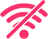

<!DOCTYPE html><html lang="ru"><head><meta charset="UTF-8"><meta http-equiv="X-UA-Compatible" content="ie=edge"><meta name="viewport" content="width=device-width, initial-scale=1.0"><title>Оконный континент - Доступ запрещён</title><link rel="stylesheet" href="css/style.min.css"><script src="js/minified/main.min.js" defer></script></head><body></body><main class="main"><section class="network-denied"><div class="container"><div class="network-denied__holder"><div class="network-denied__logo"></div><div class="network-denied__wifi"></div><p class="network-denied__text">Доступ запрещён</p><a href="#" class="link network-denied__link">Правила доступа к Wi-Fi</a></div></div></section></main></html>